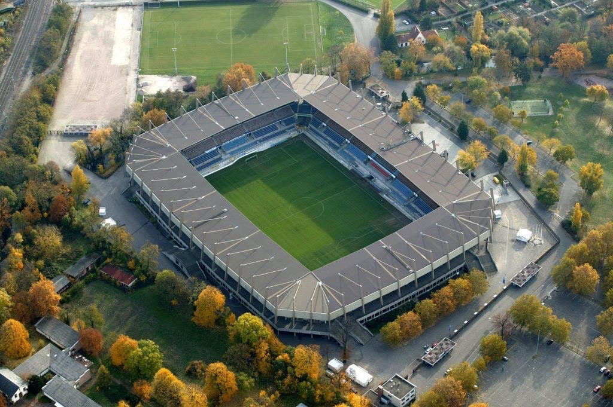

Le Futur Est En Marche
Marc Keller a rappelé que la Meinau était un lieu emblématique, chargé d’histoire et de souvenirs : "Ce stade est dans le cœur de tous les Strasbourgeois, de tous les Alsaciens. C’est là où bat le cœur de notre ville et de la région tout entière. Et c’est de son avenir dont nous sommes venus vous parler aujourd’hui", avant de céder la parole à Robert Herrmann.
Ce vendredi 17 mai 2019 s’est tenue au stade de la Meinau la conférence de presse relative à l’extension-restructuration de l’enceinte strasbourgeoise, "Un projet pour un club et un territoire"
